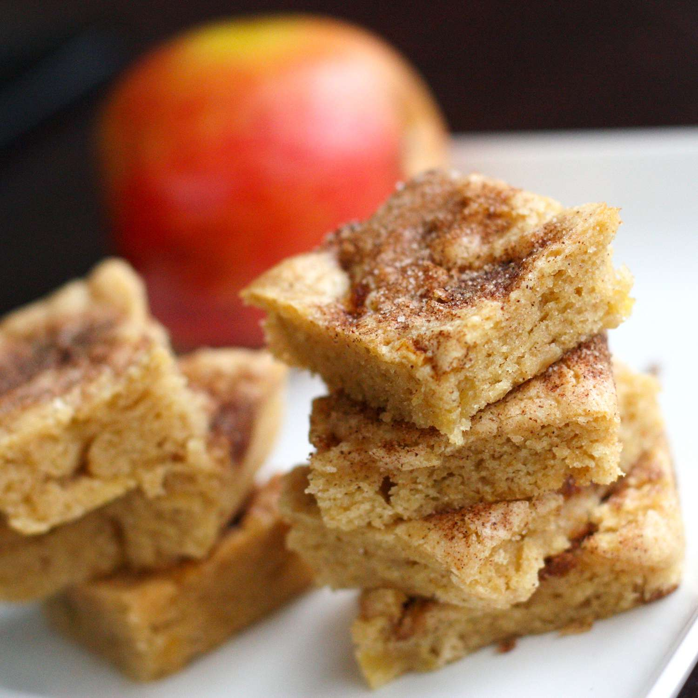

Apple Squares

These easy apple bars made with fresh apples, nuts, and cinnamon are delicious. They hardly last a day at my house!
Ingredients
- cup sifted all-purpose flour
- 1 teaspoon baking powder
- ¼ teaspoon salt
- 2 ¼ teaspoons ground cinnamon
- 2 tablespoons white sugar
- ½ cup packed brown sugar
- ½ cup white sugar
- ¼ cup unsalted butter, melted
- 1 large egg
- 1 teaspoon vanilla extract
- ½ cup chopped apple
- ½ cup finely chopped walnuts
Steps
- Preheat the oven to 350 degrees F (175 degrees C). Grease a 9-inch square pan.
- Sift flour, baking powder, salt, and 1/4 teaspoon of cinnamon into a medium bowl. Stir 2 tablespoons white sugar and remaining 2 teaspoons cinnamon together in a small bowl.
- Mix brown sugar, 1/2 cup white sugar, and melted butter together in a large bowl with a wooden spoon until smooth. Stir in egg and vanilla. Blend in flour mixture until just combined, then stir in apple and walnuts. Spread mixture evenly into the prepared pan and sprinkle cinnamon-sugar mixture over top.
- Bake in the preheated oven until the top springs back when lightly pressed, 25 to 30 minutes. Let cool completely in the pan before cutting into 16 squares.